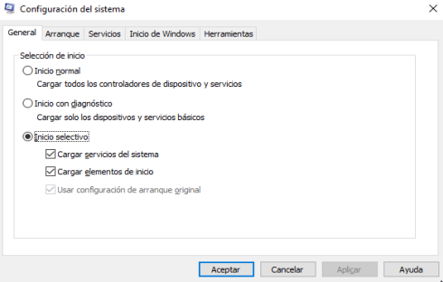
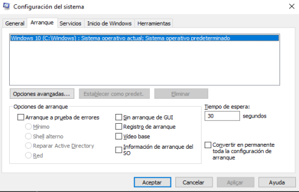
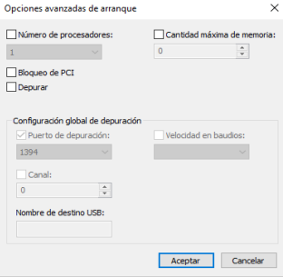
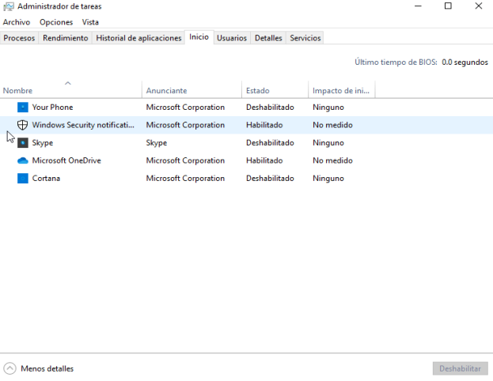

Arranque de Windows#
lo primero que se va a cargar son los ajustes del firmware, por lo que se comprueba que el sistema de disco es válido para llevar a cabo el inicio del PC, y en el caso de que el sistema esté listo se pasa a la siguiente fase. Por tanto, si el equipo tiene un MBR válido, lo que se traduce a un registro de arranque maestro, el proceso de arranque carga el conocido como “Administrador de arranque de Windows”, para a continuación pasar a la segunda fase.
Tras esto entra en juego el administrador de arranque de Windows, lo que sirve para determinar si en ese equipo disponemos de varios sistemas operativos instalados, o tan solo de uno. En el caso de que sean varios los sistemas que pueden arrancar el PC, en pantalla se muestra un menú con los nombres de estos para que podamos seleccionar el que más nos interesa en ese momento, todo con el fin de que se realice el arranque en base a nuestras necesidades.
inicio de windows Por tanto, al elegir Windows 10, que es el que nos ocupa en este caso, se pone en marcha el fichero “Winload.exe” que es el que comienza la carga del software de Microsoft. Es entonces cuando empieza la tercera fase del proceso, por lo que el mencionado “WinLoad.exe” comienza con la carga de los controladores más importantes con los que cuenta el equipo y así poder iniciar el Kernel del propio Windows 10. Por tanto, en este paso el núcleo del sistema utiliza los controladores para «comunicarse» con el hardware que tenemos instalado y lograr que el proceso de arranque siga su curso sin problema alguno.
Y para terminar os vamos a hablar de la última fase, que es en la que se recoge la configuración del Registro de Windows, así como el resto controladores adicionales, entre otros elementos necesarios para el correcto funcionamiento del sistema operativo.
or lo tanto, una vez se carga esto, el control en ese momento lo toma el proceso de gestión del sistema, con lo que a continuación se carga la interfaz de usuario, además del resto del hardware y el software instalado. Por tanto, finalizado este paso, en pantalla aparece la habitual interfaz de inicio de sesión de Windows 10 para que podamos introducir las correspondientes credenciales de acceso.
Eso sí también merece la pena saber que cuando iniciamos Windows 10 en un ordenador que tiene soporte UEFI, la función llamada “Trusted Boot” protege el equipo desde el mismo momento en el que comienza el inicio del mismo. Así, lo primero que hace es localizar el gestor de arranque del sistema operativo, mientras que los PCs sin arranque seguro ejecutan cualquier gestor de arranque que encuentren en el disco duro, pero con UEFI, en primer lugar se verifica que el firmware esté firmado digitalmente para que todo el proceso se lleve a cabo con mayor seguridad y fiabilidad.
msconfig#
Es una utilidad del sistema operativo cuya función inicial era la de corregir problemas asociados con el inicio de Windows, pero la cual poco a poco ha tomado más fuerza gracias a sus diversas alternativas de uso. Gracias a msconfig será posible ejecutar tareas como:
Facilidad para configurar la forma de inicio de Windows.
Cambiar el procedimiento de inicio.
Seleccionar los servicios de inicio y programas que serán cargados junto con el sistema y muchas acciones más.
Acceder a msconfig en Windows 10: Ejecutar el comando msconfig
Como vemos, la utilidad msconfig nos brinda una serie de opciones a elegir, estas son:
Inicio normal. Es la opción por defecto e indica que Windows 10 cargara todos los elementos, controladores y servicios de inicio que han sido instalados, únicamente cuando se han realizado cambios en los controladores, servicios o aplicaciones que se cargan durante el arranque podemos seleccionar una opción adicional.
Inicio con diagnóstic. Su uso es similar al inicio en modo seguro ya conocido por todos, al seleccionar esta opción solo se ejecutarán los servicios y controladores de Windows 10, adicional a ello, el inicio de Diagnóstico está en la capacidad de ejecutar servicios de red o servicios aplicaciones de terceros, que son de un alto impacto para la seguridad del sistema tal como el antivirus, firewall, etc. Por lo general podemos iniciar Windows 10 con esta opción para comprobar si los servicios de Windows están afectando algún parámetro de uso del sistema y así descartar estas opciones.
Inicio selectivo. Al seleccionar esta opción, Windows 10 iniciará solo con los servicios y controladores básicos, también con esta opción será posible seleccionar otros servicios y elementos de inicio a ejecutar directamente desde las pestañas Servicios y Inicio.
Hoy en día es normal, para muchos usuarios, contar con modo de arranque dual el cual nos permite tener dos sistemas operativos instalados en el disco duro aprovechando así todos los recursos de hardware, en caso de contar con más de un sistema operativo instalado, la herramienta msconfig nos da la opción de elegir cuál de ellos será la opción predeterminada.
Aquí podemos cambiar sistema de arranque inicio por defecto en Windows 10, si tienes sistema dual boot, aquí tienes los pasos para cambiar cuál es el Sistema Operativo que se inicia por defecto desde Windows 10. También podemos cambiar el tiempo de espera que por defecto son 30 segundos.
Existen una serie de opciones avanzadas en el sistema operativo que nos darán la opción de mejorar el arranque del sistema operativo, estas opciones avanzadas involucran cambios a nivel de memoria, procesadores o depuración de elementos.
En la sección “Numero de procesadores” podemos definir la cantidad de procesadores disponibles en base al CPU de nuestro equipo (2, 4, 8 o más procesadores).
En la sección “Cantidad máxima de memoria” podremos asignar la cantidad de RAM que deseamos que Windows 10 aplique al proceso de arranque, allí podemos usar toda la capacidad de la RAM instalada.
En el campo “Configuración global de depuración”, esta opción esta deshabilitada por defecto y esta función se encarga de especificar la configuración de conexión del depurador en el equipo local con el fin de que un depurador de kernel pueda comunicarse con un host depurador, la conexión del depurador entre los equipos host y de destino puede ser de tipo Serie, IEEE 1394 o USB 2.0, en el puerto de depuración se especifica qué tipo de puerto será usado como tipo de conexión y puerto serie, el valor predeterminado es COM 1, finalmente la velocidad en baudios indica la velocidad en baudios que se usará al momento de seleccionar el puerto de depuración y el tipo de conexión de depuración, esta configuración es opcional y los valores válidos son 9600, 19.200, 38.400, 57.600 y 115.200. El valor predeterminado es 115.200 bps.
Para configurar este arranque en modo seguro, desde la pestaña Arranque, activaremos la casilla “Arranque a prueba de errores” y allí seleccionar alguna de las opciones disponibles que son la siguientes:
Mínimo. Con esta opción el arranque seguro se ejecuta de forma normal, con una interfaz de usuario y sin servicios de red habilitados.
Shell alterno. Esta opción abre el símbolo del sistema en modo a prueba de errores. Los servicios de red y la interfaz gráfica de usuario están deshabilitados por defecto.
Reparar Active Directory. Es un inicio seguro normal que ejecuta los servicios y características de Active Directory, útil para equipos en un dominio.
Red. Ejecuta el inicio seguro normal con servicios de red habilitados.
Para deshabilitar opciones de arranque Windows 10, En la misma pestaña de arranque, encontramos en la parte inferior derecha una serie de opciones para aplicar a los procedimientos de arranque estándar y en modo seguro, estas opciones son.
Sin arranque de GUI. Al seleccionar esta opción, durante el arranque, no se mostrará la pantalla de carga habitual, tan solo una pantalla negra sin información con el fin de mejorar la velocidad de arranque.
Registro de arranque. En el proceso de inicio, Windows 10 escribe un registro completo detallando toda la información sobre el proceso de inicio, por defecto esta información está en la ruta C:WindowsNtbtlog.txt.
Vídeo base. Al seleccionar esta opción, ejecutamos un inicio de Windows estándar, en el cual solo serán cargados los controladores de vídeo estándar que vienen con el sistema operativo por defecto, en lugar de los específicos de la tarjeta de vídeo.
Información de arranque del SO. Si usamos esta opción, también debemos activar la opción Sin arranque de GUI. Con estas opciones, la pantalla de carga de Windows habitual se verá reemplazada por una pantalla negra, donde veremos información completa sobre los controladores que son cargados durante el proceso de inicio, así, en caso de que Windows se bloquee en el proceso de arranque, este modo de visualización puede ser útil para encontrar el controlador que causa el bloqueo y así facilitar las tareas de soporte.
Nota: En caso de que sea necesario que los cambios que hemos realizado sean constantes, debemos activar la casilla “Convertir en permanente toda la configuración de arranque”, o para volver al inicio normal utilizar otra vez el comando msconfig
Podemos también definir los servicios que serán cargados en el arranque Windows 10. En la pestaña «Servicios» será posible activar los servicios que serán ejecutados al inicio y desmarcar los que no lo serán, en caso de desear ver solo los servicios de terceros instalados por las aplicaciones, debemos activar la casilla “Ocultar todos los servicios de Microsoft”. Es aconsejable tener conocimiento sobre qué servicios han de deshabilitarse ya que si deshabilitamos algún servicio de Microsoft podemos causar anomalías en el sistema. Para definir los programas que serán cargados en el arranque Windows 10 Es normal que los programa y aplicaciones que instalamos en Windows 10, cuenten con una opción la cual permite que estos sean cargados desde el proceso de arranque lo cual representa un impacto negativo en el rendimiento de este.
Para deshabilitar programas de Inicio arranque Windows 10, vamos a la pestaña “Inicio de Windows” y allí damos clic en la línea “Abrir el administrador de tareas” el cual nos redireccionará a la pestaña “Inicio” del administrador de tareas:
Si deseamos impedir que alguno de ellos sea ejecutado contamos con las siguientes opciones: Dar clic derecho sobre él y seleccionar la opción “Deshabilitar”. Seleccionarlo y pulsar en el botón “Deshabilitar” ubicado en la parte inferior
Finalmente, en la pestaña “Herramientas” de msconfig, disponemos de un conjunto de herramientas del sistema como Información del sistema, Editor del registro, Visor de eventos, Monitor de rendimiento y más, las cuales nos permiten realizar una tarea mucho más completa. Podemos ver que cada herramienta tiene asociado un comando de ejecución.
Gestión de servicios (PowerShell)#
Get-Service
New-Service
Restart-Service
Resume-Service
Set-Service
Start-Service
Stop-Service
Suspend-Service
Ejemplo de uso:
PS C:\Users\alumno> Get-Service -Name Spooler
Status Name DisplayName
------ ---- -----------
Running Spooler Cola de impresión
PS C:\Users\alumno> Restart-Service -Name Spooler
ADVERTENCIA: Esperando a que se inicie el servicio 'Cola de
impresión (Spooler)'...